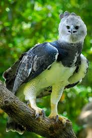

aguila arpia
 El águila arpía (Harpia harpyja) habita en México en las selvas tropicales de la vertiente del Golfo, en los estados de Oaxaca, Chiapas, Campeche, Quintana Roo, Tabasco, San Luis Potosí y Tamaulipas.
Amenazas
Está en peligro de extinción. Su población es muy pequeña. Su tasa de reproducción es baja. Ha sido extirpada de gran parte de su distribución original.